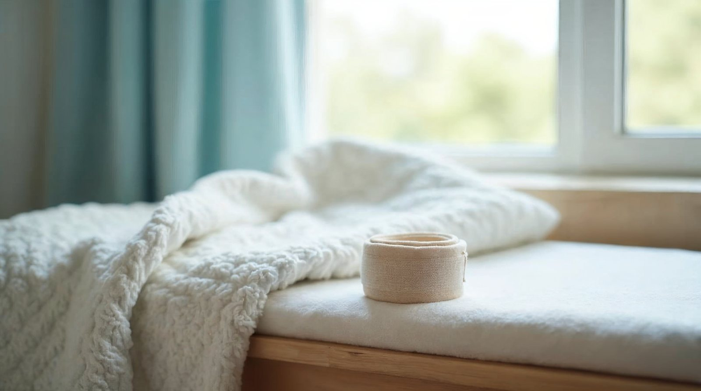
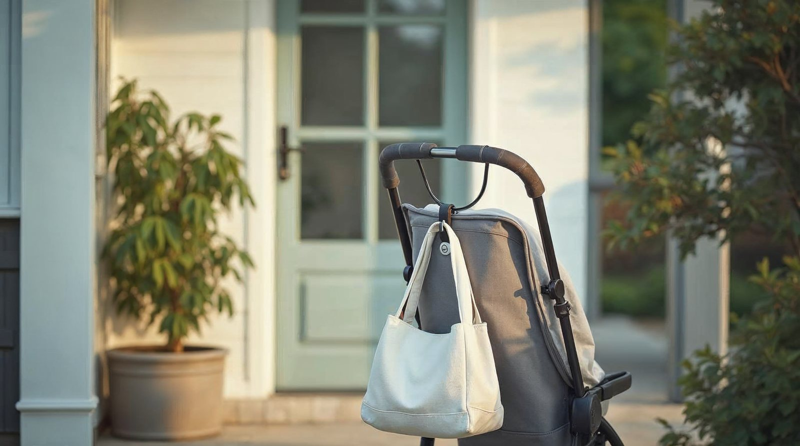

이종호 한의사 감수좋은꿈참사랑한의원 대표원장 (한의사 면허번호 19769)발행 2026-11-23 · 수정 2026-11-26
이 글의 차례
- 왜 이런 불편이 생길 수 있나요
- 먼저 이렇게 여쭙니다
- 일상에서 먼저 해 볼 수 있는 것
- 한의원에서 함께 살필 수 있는 경우
- 얼마나 지켜보고 언제 진료를 받으면 좋을까요
- 이런 경우를 예로 들 수 있습니다
- 스스로 점검해 보세요
- 처음 오시면 이렇게 진행됩니다
- 이렇게 기록해 오시면 상담이 쉬워집니다
- 손목 엄지 쪽 통증과 손가락 저림은 어떻게 다른가요?
- 왜 출산 뒤 몇 달 동안 손목이 더 예민할까요
- 하루 육아 동작별로 손목을 아끼는 방법
- 짧게 할 수 있는 손목·어깨 풀기
- 아기띠와 수유 쿠션은 이렇게 맞춰 보세요
- 보호자끼리 시간을 나누는 현실적인 방법
- 끼니와 잠은 어떻게 챙길까요?
- 둘째를 키우거나 아이가 걷기 시작하면 무엇이 달라질까요?
- 진료를 받는 동안 집에서는 이것만 이어 가 주세요
- 아빠나 조부모가 안을 때도 같은 원칙입니다
- 이런 증상은 먼저 확인이 필요합니다
- 관련 글
아기를 안는 일은 하루에도 수십 번 반복됩니다. 손목이나 어깨가 아파 온다면 아기 탓이 아니라 안는 방식과 쉴 틈 없는 일과가 겹친 결과일 수 있어, 자세부터 차근차근 살펴볼 만합니다.
왜 이런 불편이 생길 수 있나요
- 아기를 받칠 때 손목을 꺾은 채 엄지에 힘을 주면 손목 엄지 쪽 힘줄에 부담이 모일 수 있습니다.
- 늘 같은 팔로 안으면 한쪽 어깨와 목만 계속 긴장합니다.
- 수유하며 몸을 앞으로 숙이는 시간이 길면 등과 어깨가 굳기 쉽습니다.
- 밤에 자주 깨 쉬지 못하면 같은 부담도 더 크게 느껴집니다.
먼저 이렇게 여쭙니다
- 아기를 주로 어느 쪽 팔로 안으시나요? 늘 같은 쪽인가요?
- 손목이나 엄지 쪽이 아픈가요, 어깨와 목이 더 아픈가요?
- 수유할 때 허리를 숙이거나 어깨를 올리고 계시지 않나요?
- 밤에 자주 깨서 충분히 쉬지 못하고 있나요?
- 아기띠나 유모차는 어떻게 쓰고 계신가요?

일상에서 먼저 해 볼 수 있는 것
- 안는 팔을 번갈아 바꾸고 아기를 몸 가까이 붙여 안기
- 수유 때 쿠션으로 아기를 높여 허리와 어깨를 숙이지 않기
- 손목을 꺾어 받치기보다 팔 전체로 안아 부담 나누기
- 아기띠는 어깨끈과 허리 지지대를 몸에 맞게 조절하기
- 가능하면 다른 보호자와 안는 시간을 나누기
한의원에서 함께 살필 수 있는 경우
- 안을 때마다 손목과 엄지 쪽이 시큰한 경우 손을 쓰는 방식과 자세를 함께 살핍니다.
- 어깨와 목이 뭉치고 등까지 뻐근해지는 경우 하루 동안의 자세와 쉬는 시간을 함께 살핍니다.
- 잠이 부족해 몸이 더 무겁게 느껴지는 경우 회복에 필요한 휴식과 생활 리듬을 함께 살핍니다.
좋은꿈참사랑한의원에서는 손목과 어깨, 목의 긴장을 함께 살피고, 필요하다고 판단될 때 침이나 추나 등을 정합니다. 수유 중이라면 그 점을 고려해 방법을 고릅니다.

얼마나 지켜보고 언제 진료를 받으면 좋을까요
- 많이 안은 날 저녁에만 뻐근하고 하룻밤 자고 나면 가벼워진다면, 안는 팔을 바꾸고 수유 자세를 조정하며 1~2주 지켜볼 수 있습니다.
- 2주 정도 자세를 바꿔 봐도 손목 엄지 쪽 시큰함이 그대로이거나, 아기를 들어 올릴 때마다 찌릿하다면 진료를 받아 보시길 권합니다.
- 통증 때문에 아기를 안기가 겁나거나 밤에 아파서 깬다면 지켜보기보다 진료 일정을 잡아 보세요.

이런 경우를 예로 들 수 있습니다
- 예를 들어 아기를 늘 왼팔에 안고 오른손으로 집안일을 하는 경우, 왼쪽 어깨와 목이 굳고 오른쪽 손목은 따로 지쳐 양쪽 아픈 곳이 다를 수 있어 하루 동작을 순서대로 여쭙니다.
- 예를 들어 밤중 수유를 침대 끝에 걸터앉아 고개를 숙인 채 하는 경우, 등과 목이 함께 뻐근해지기 쉬워 쿠션 높이와 등받이 위치를 함께 점검합니다.
- 예를 들어 아기가 자라 무게가 늘었는데 아기띠 끈을 처음 길이 그대로 쓰는 경우, 아기가 아래로 처지며 허리와 어깨에 부담이 몰릴 수 있어 끈 길이를 함께 확인합니다.
스스로 점검해 보세요
- 아기를 들어 올릴 때 손목 엄지 쪽이 찌릿하다
- 병뚜껑을 열거나 휴대폰을 쥘 때 엄지 쪽이 아프다
- 늘 같은 팔로만 안게 된다
- 수유 뒤 등과 목이 뻣뻣하다
- 밤에 세 번 이상 깨는 날이 이어진다
- 아침에 손가락이 붓거나 뻣뻣한 느낌이 있다
- 끼니를 거르거나 서서 급히 먹는 날이 많다
해당하는 항목을 표시해 두었다가 진료 때 보여 주시면, 짧은 진료 시간에도 이야기를 빠르게 정리할 수 있습니다.

처음 오시면 이렇게 진행됩니다
접수 때 출산 시기와 수유 여부, 복용 중인 약이나 영양제를 알려 주세요. 원장이 먼저 맥을 짚으면서 하루 동안 아기를 안는 시간과 아픈 동작을 여쭙고, 손목·엄지·어깨·목을 눌러 보고 움직여 보며 아픈 지점을 확인합니다.
아기를 안는 자세를 직접 재현해 보며 어느 순간에 아픈지 함께 찾고, 힘줄 주변을 눈으로 확인할 필요가 있다고 판단되면 초음파를 함께 봅니다. 오늘 할 치료와 이유를 먼저 설명드린 뒤 진행하고, 치료가 끝나면 집에서 바꿔 볼 안는 방법과 다음 방문 간격을 정합니다.
진료시간은 평일 09:30~20:00(점심 13:00~14:00), 토·일·공휴일 09:30~15:00이며, 아기와 함께 오실 때의 진료 흐름은 방문 전 전화로 확인해 주세요.
이렇게 기록해 오시면 상담이 쉬워집니다
- 아기를 주로 안는 팔과 하루 동안 안는 시간
- 아픈 동작(안아 올리기, 수유, 트림시키기 등)
- 수유 중인지, 복용 중인 약이 있는지
손목 엄지 쪽 통증과 손가락 저림은 어떻게 다른가요?
아기를 돌보는 분들이 손목이 아프다고 하실 때, 아픈 자리와 느낌을 들어 보면 몇 가지로 나뉘는 경우가 많습니다.
- 손목 엄지 쪽이 시큰한 경우: 엄지를 손바닥 안으로 넣고 주먹을 쥔 채 손목을 새끼손가락 쪽으로 꺾을 때 아픈 경우가 많습니다. 아기를 들어 올리거나 엄지와 검지로 받칠 때 찌릿합니다.
- 손가락이 저린 경우: 엄지부터 약지 사이가 저릿하고, 밤이나 새벽에 손이 저려 깨서 손을 털게 됩니다. 수유 때 손목을 오래 굽히고 있으면 심해지기도 합니다.
- 어깨와 목에서 시작된 경우: 손목보다 팔 바깥쪽과 어깨가 무겁고, 고개를 돌리면 불편이 달라집니다.
둘 이상이 함께 있는 분도 많아, 첫 진료에서는 손목·엄지·손가락 감각과 목의 움직임을 차례로 확인합니다.
왜 출산 뒤 몇 달 동안 손목이 더 예민할까요
임신과 출산 전후에는 몸에 수분이 많이 머물고 호르몬이 크게 바뀌어, 손목 주변이 붓고 예민해지기 쉽다는 설명이 있습니다. 그 시기에 하루 수십 번 아기를 들어 올리는 동작이 새로 더해지니 손목과 엄지가 먼저 지치기 쉽습니다.
여기에 밤중 수유로 잠이 조각나면 몸이 쉬는 시간이 부족해지고, 같은 동작도 더 아프게 느껴질 수 있습니다. 그래서 손목만 보지 않고 잠과 식사, 몸의 붓기를 함께 여쭙습니다.
수유 중이거나 임신 가능성이 있다면 진료 초반에 꼭 말씀해 주세요. 한약·침·추나 모두 그 점과 지금 드시는 약을 확인하고 진찰한 뒤 상의해 정하며, 임신 가능성이 있다면 산부인과 담당 의사와도 상의하시길 권합니다.
하루 육아 동작별로 손목을 아끼는 방법
- 바닥에서 안아 올릴 때: 손바닥을 아기 등과 엉덩이 아래로 넓게 넣고, 손목이 아니라 팔 전체로 들어 올립니다.
- 트림시킬 때: 아기를 어깨에 기대게 하고, 손목을 꺾어 두드리기보다 손바닥 전체로 등을 쓸어 줍니다.
- 분유 탈 때: 젖병을 세게 흔들기보다 양손 사이에 끼워 굴리듯 섞습니다.
- 목욕 때: 아기 목을 엄지와 검지로 받치기보다 팔뚝 안쪽에 머리를 올려 받칩니다.
- 유모차를 밀 때: 손목을 꺾지 말고 손잡이를 감싸 쥐고 팔꿈치를 살짝 굽힙니다.
- 젖병을 씻을 때: 찬물로 오래 씻으면 손이 굳기 쉬워 미지근한 물을 씁니다.
하루 동작 중 가장 아픈 한 가지를 먼저 골라 바꿔 보시면, 다음 진료에서 무엇이 달라졌는지 이야기하기도 쉽습니다.
짧게 할 수 있는 손목·어깨 풀기
- 아기가 잠들었을 때 손목을 천천히 위아래로 열 번 움직이고 손가락을 쫙 폈다 쥐기
- 양손을 깍지 끼고 앞으로 쭉 밀며 등 위쪽을 둥글게 늘이기
- 벽 모서리에 손을 대고 가슴을 앞으로 내밀어 수유로 말린 어깨 앞쪽 펴 주기
모두 아프지 않은 범위에서 30초 정도면 충분합니다. 시큰함이 커지면 바로 멈추세요.
아기띠와 수유 쿠션은 이렇게 맞춰 보세요
같은 아기띠라도 끈 길이와 위치에 따라 어깨에 실리는 무게가 꽤 달라질 수 있습니다.
- 아기 머리에 고개를 숙여 입을 맞출 수 있을 만큼 아기를 높이 올려 안습니다.
- 허리 벨트는 골반 뼈 위에 단단히 채워 무게를 허리와 골반으로 나눕니다.
- 등 뒤 가슴 끈은 양 어깨끈이 바깥으로 벌어지지 않을 높이에 둡니다.
수유 쿠션은 아기 입이 엄마 가슴 높이까지 오도록 높이를 맞추고, 부족하면 접은 담요를 더 받칩니다. 등 뒤에도 쿠션을 대어 상체가 앞으로 쏠리지 않게 하고, 발밑에 낮은 받침을 두면 어깨 힘이 덜 들어갑니다.
보호자끼리 시간을 나누는 현실적인 방법
손목과 어깨를 쉬게 하는 현실적인 방법은 안는 시간을 나누는 것입니다. 마음으로는 알아도 실제로는 한 사람에게 몰리기 쉬워 미리 정해 두는 편이 좋습니다.
- 밤중 수유가 분유라면 한 번은 다른 보호자가 맡아 긴 잠을 한 번이라도 확보하기
- 목욕, 재우기, 아침 기저귀처럼 일을 이름 붙여 담당을 정하기
- 퇴근한 보호자가 첫 30분은 아기를 맡아, 하루 종일 안고 있던 분이 손과 어깨를 쉬게 하기
- 조부모나 가족이 도울 수 있는 날을 달력에 표시해 두기
혼자 돌보는 시간이 길다면 곁에서 지켜보며 아기가 안전한 바운서나 매트 위에서 노는 시간을 조금씩 늘려, 팔을 내려놓는 틈을 만드세요.
끼니와 잠은 어떻게 챙길까요?
저는 잘 먹고, 잘 싸고, 잘 자고, 마음 편하고, 몸 따뜻하게, 이 다섯 가지를 몸이 회복하는 바탕으로 봅니다. 육아 중에는 이 다섯 가지가 한꺼번에 흔들리기 쉬워, 손목 이야기를 하다가도 끼니와 잠을 꼭 여쭙습니다.
끼니를 거르고 서서 급히 먹는 날이 많다면 몸이 회복할 재료가 부족해지기 쉽습니다. 한 손으로 먹을 수 있는 삶은 달걀, 두유, 바나나 같은 간식을 손 닿는 곳에 두면 도움이 됩니다.
아기가 낮잠을 잘 때 집안일보다 20분이라도 함께 눕는 것을 먼저 해 보세요. 잠이 조금 늘면 같은 동작도 덜 아프게 느껴질 수 있습니다.
둘째를 키우거나 아이가 걷기 시작하면 무엇이 달라질까요?
둘째가 생기면 큰아이를 안아 주면서 작은 아이를 돌보는 일이 겹쳐, 한쪽 팔에 무게가 몰리는 시간이 더 길어지기 쉽습니다. 큰아이에게는 앉은 자리에서 무릎에 앉혀 안아 주고, 서서 오래 안는 일은 줄여 보세요.
아이가 걷기 시작하면 손을 잡고 허리를 숙인 채 따라다니거나, 갑자기 뛰어가는 아이를 붙잡느라 손목이 확 꺾이는 일이 생깁니다. 아이 손목만 잡아끌기보다 아이 몸통을 감싸 안는 습관을 들이고, 외출할 때는 유모차를 함께 챙겨 안는 시간을 나눠 주세요.
아이 무게가 늘어나는 만큼 안는 방식도 몇 달마다 다시 점검해 보시길 권합니다.
진료를 받는 동안 집에서는 이것만 이어 가 주세요
치료를 받은 날 그동안 미뤄 둔 집안일을 한꺼번에 하시는 분도 있는데, 그날만큼은 무거운 빨래나 대청소를 미루고 손을 쉬게 해 주세요.
진료 때 정한 안는 방법 한 가지와 손목 풀기 한 가지만 일주일 동안 이어 가 보시고, 어떤 순간에 여전히 아픈지 짧게 적어 오시면 다음 진료에서 무엇을 바꿀지 함께 정하기 쉽습니다. 아이를 보며 메모하기 어렵다면 휴대폰 음성 메모로 남겨 두셔도 충분합니다.
아빠나 조부모가 안을 때도 같은 원칙입니다
손목과 어깨 부담은 엄마만의 이야기가 아닙니다. 퇴근 뒤 아기를 오래 안아 재우는 아빠, 낮 동안 손주를 돌보시는 조부모님도 같은 자리가 아프기 쉽습니다. 안는 팔을 바꾸고 몸 가까이 붙여 안는 원칙을 가족 모두가 함께 나누면, 한 사람에게 부담이 몰리는 일도 줄어듭니다.
누군가를 챙기느라 정작 본인이 밤에 몇 번 깼는지 셀 겨를도 없이 지내는 때가 있습니다. 그 틈에 시간을 내어 오셨다면 손목만이 아니라 그동안 애쓴 몸 전체를 함께 살피겠습니다. 다음에 오시면 바꿔 본 안는 방법 한 가지가 어땠는지, 그 주에 밤에 몇 번 깨셨는지부터 여쭙겠습니다.
이런 증상은 먼저 확인이 필요합니다
- 손가락에 힘이 빠져 물건을 자주 놓치는 경우
- 손목이나 팔이 붉게 붓고 뜨겁거나, 몸에 열이 나는 경우
이런 신호가 있으면 한의원보다 가까운 병원이나 응급실을 먼저 찾으세요.
관련 글
- 출산 뒤 아기를 안다가 손목과 손가락이 아플 때는 어떻게 하나요?
- 아이를 씻기고 안아 올릴 때 허리를 숙이는 동작이 반복되면 어떻게 하나요?
- 출산 뒤 유모차를 밀고 언덕길을 오르내릴 때 손목과 허리가 뻐근하면 어떻게 하나요?

여쭙는 것
- 아기를 주로 어느 쪽 팔로 안으시나요? 늘 같은 쪽인가요?
- 손목이나 엄지 쪽이 아픈가요, 어깨와 목이 더 아픈가요?
- 수유할 때 허리를 숙이거나 어깨를 올리고 계시지 않나요?
생활에서 해 볼 것
- 안는 팔을 번갈아 바꾸고 아기를 몸 가까이 붙여 안기
- 수유 때 쿠션으로 아기를 높여 허리와 어깨를 숙이지 않기
- 손목을 꺾어 받치기보다 팔 전체로 안아 부담 나누기
한의원에서 함께 살필 것
- 안을 때마다 손목과 엄지 쪽이 시큰한 경우 손을 쓰는 방식과 자세를 함께 살핍니다.
- 어깨와 목이 뭉치고 등까지 뻐근해지는 경우 하루 동안의 자세와 쉬는 시간을 함께 살…
- 잠이 부족해 몸이 더 무겁게 느껴지는 경우 회복에 필요한 휴식과 생활 리듬을 함께…
먼저 확인이 필요한 신호
- 손가락에 힘이 빠져 물건을 자주 놓치는 경우
- 손목이나 팔이 붉게 붓고 뜨겁거나, 몸에 열이 나는 경우
한눈에 보는 표
| 구분 | 핵심 |
|---|---|
| 여쭙는 것 | 아기를 주로 어느 쪽 팔로 안으시나요? 늘 같은 쪽인가요? 손목이나 엄지 쪽이 아픈가요, 어깨와 목이 더 아픈가요? |
| 생활에서 해 볼 것 | 안는 팔을 번갈아 바꾸고 아기를 몸 가까이 붙여 안기 수유 때 쿠션으로 아기를 높여 허리와 어깨를 숙이지 않기 |
| 한의원에서 함께 살필 것 | 안을 때마다 손목과 엄지 쪽이 시큰한 경우 손을 쓰는 방식과 자세를 함께 살핍니다. 어깨와 목이 뭉치고 등까지 뻐근해지는 경우 하루 동안의 자세와 쉬는 시간을 함께 살핍니다. |
| 먼저 확인이 필요한 신호 | 손가락에 힘이 빠져 물건을 자주 놓치는 경우 손목이나 팔이 붉게 붓고 뜨겁거나, 몸에 열이 나는 경우 |
자주 묻는 질문
아기를 안느라 생긴 통증은 시간이 지나면 괜찮아지나요?
아기가 커서 안는 시간이 줄면 편해지기도 하지만, 그 사이 자세가 굳을 수 있어 생활에서 부담을 나누는 것이 좋습니다.
손목 보호대를 계속 차도 되나요?
잠깐 쓰는 경우는 있으나 오래 착용하면 쓰는 방식이 굳을 수 있어 상담 때 상태를 보고 정하는 편이 좋습니다.
한의원에는 아기와 함께 가도 되나요?
방문 전에 전화(02-815-7510)로 상황을 알려 주시면 진료 흐름을 함께 의논할 수 있습니다.
손목이 시큰할 때 찜질은 따뜻하게 하나요, 차갑게 하나요?
부딪힌 직후처럼 열감이 있을 때는 차갑게 짧게, 오래된 뻐근함에는 따뜻하게 하는 경우가 많습니다. 헷갈리면 진료 때 여쭤 주세요.
좋은꿈참사랑한의원은 재진 때 지난번 이야기부터 이어서 여쭙니다. 진료시간과 예약은 오시는 길에서 확인하세요.
어디서 상담받을 수 있나요?
좋은꿈참사랑한의원은 서울 동작구 만양로2길 2 신성빌딩 3층·5층(서울 동작구 상도동, 7호선 상도역 3번 출구 근처)에 있습니다. 한의사 3명(이종호 대표원장, 조영기 수석진료원장, 정원영 진료원장)이 진료합니다. 진료시간은 평일 09:30~20:00(점심 13:00~14:00), 토·일·공휴일 09:30~15:00이며, 방문 전 전화로 확인을 권합니다. 예약은 네이버 예약, 카카오톡 상담, 전화 02-815-7510로 받습니다.
이 글은 일반적인 건강 정보이며 개인의 진단이나 치료를 대신하지 않습니다. 증상이 있거나 복용 중인 약이 있다면 진료를 통해 확인하세요. 치료 효과는 개인마다 다를 수 있습니다.
작성 기준: 일반적으로 알려져 있는 건강 정보를 참고해 정리했습니다(대표원장 감수). 증상 기록은 1~2주 동안 하루 1회, 비슷한 시간에 적어 오시면 지난 상태와 비교하기 쉽습니다.